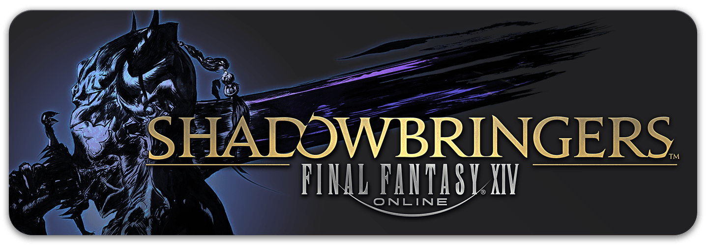

If it is your first resistance weapon, there are one time quests associated with each part that are required to compete in addition to the parts that are required for every weapon that are listed on this page. It is also advised to also progress your rank in the Bozjan related zones alongside the weapon progression to be able to complete some of these quests easily.
Part 1 - Quest: Resistance is (not) Futile
Requires buying 4 Thavnairian Scalepowder for 1000 (4x250) poetics from one of many vendors in places such as Mor Dhona, Idlyshire or starting cities. This will get the first version of the resistance weapon at an ilvl of 485 with 5 materia slots for your current job.
Part 2 - Quest: For Want of a Memory
Requires 20 of each of Tortured Memory of the Dying, Sorrowful Memory of the Dying and Harrowing Memory of the Dying:
- - Tortured Memory of the Dying
- A chance drop from fates and mobs in the southern section of the Bozjan Southern Front or a guaranteed drop from gold medals in Sea of Clouds and Coerthas Western Higlands fates.
- - Sorrowful Memory of the Dying
- A chance drop from fates and mobs in the middle section of the Bozjan Southern Front or a guaranteed drop from gold medals in The Dravanian Forelands or The Churning Mists fates.
- - Harrowing Memory of the Dying
- A chance drop from fates and mobs in the northern section of the Bozjan Southern Front a guaranteed drop from gold medals in The Dravanian Hinterlands or Azys Lla fates.
This will upgrade your weapon to ilvl 500.
Part 3 - Quest: The Will to Resist
Obtain 6 Bitter Memories of the Dying, which are from:
- Any Level 60 dungeon
- Duty Roulette: Levelling (once per day)
- Randomly (rarely) anywhere in The Bozjan Southern Front
This will add a glow to your ilvl 500 weapon.
Part 4 - Quest: Change of Arms
Obtain 15 Loathsome Memoroy of the Dying, which are from:
- Crystal Tower alliance raids
- Critical engagments within Bozjan Southern Front
- Completing Castrum Lacus Litore (rewards x5)
This will upgrade your weapon to ilvl 510.
Part 5 - Quest: A New Path of Resistance
Obtain 15 Timeworn Artifacts, which are from
- The raid Delubrum Reginae (rewards x3)
- A chance from completeing sections of the deep dungeon Palace of the dead
This will upgrade your weapon to ilvl 515 with allocatable stats rather than materia slots.
Part 6 - Quest: Irresistable
Obtain 15 Raw Emotions, which are from:
- The Dalriada in Zandor (rewards x3)
- The raid Delubrum Reginae (rewards x2)
- Any level 70 dungeon
- A chance from completeing sections of the deep dungeon Heaven-On-High
This will upgrade your weapon to ilvl 535 with a higher stat budget for allocation than the previous step. Congratulations, you were crazy enough to complete another weapon.